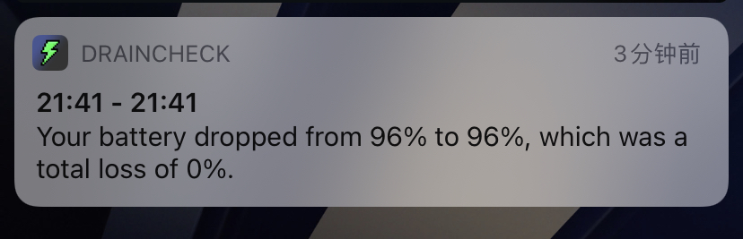
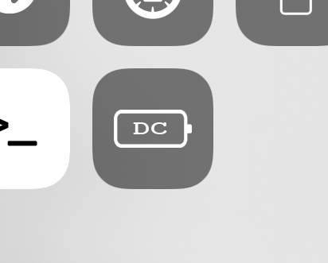

-
Monitor your battery drain with a CC module.
 
In this version
-
2.0
- Rewrote the tweak, there is now a Control Centre module to start/stop monitoring. This also means the tweak does not contain a dylib or preference pane now either, just the CC module.
Previous updates
-
1.1.3
- Fix the notification sometimes showing (null) and 0% loss/gain.
- Monitoring no longer gets reset by resprings.
-
1.1.2
- Fix notifications being delivered more than once.
- Stability improvements for DND monitoring and "activate LPM with DND".
- Using LPM to monitor battery drain is now marked as BETA as I'm continuously working on it.
-
1.1.1
- Fix preferences not loading on some devices.
-
1.1
- Add preferences.
- Add option to activate the tweak by enabling/disabling low power mode.
- Add option to toggle LPM automatically when turning on/off DND.
-
1.0.3
- Switch from libbulletin to libnotifications.
- Fix notifications not staying in the notification centre.
- Minor visual enhancements.
-
1.0.2
- Add an icon to the notification.
- Show the times of when the battery analysis initiated and ended in the notification.
-
1.0.1
- Remove debug logging code.
- Fix the notification displaying negative numbers if you gained instead of lost battery percent.
-
1.0.0
- Initial release.
Known Issues
- No current issues.